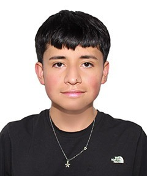
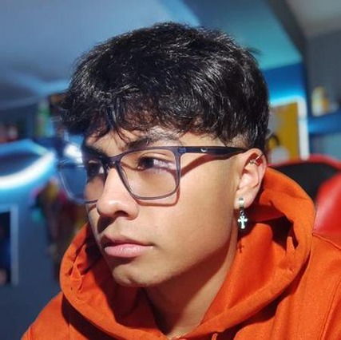

Hola, Soy Thiago Valentino Molero Zegarra
Rol en el equipo: Screw Master
Me apasiona el desarrollo de software, el desarrollo web y las bases de datos, áreas en las que busco mejorar continuamente mediante proyectos académicos y personales. Disfruto enfrentar nuevos retos tecnológicos y aprender herramientas que me permitan crear soluciones eficientes e innovadoras, siempre con el objetivo de crecer como futuro ingeniero.
Fuera del ámbito académico, disfruto de los videojuegos, especialmente Minecraft, donde me gusta construir, diseñar y experimentar con mecanismos de redstone. También soy aficionado a las historias de fantasía y misterio, siendo Lord of Mysteries una de mis obras favoritas. Me interesa explorar nuevas tecnologías, optimizar mis proyectos y aprender constantemente sobre programación, buscando siempre superar nuevos desafíos.

GitHub: https://github.com/Thiago-Molero
correo: 024100247a@uandina.edu.pe
Hola, Soy Hakscel Liomar Capatinta Machaca
Rol en el equipo: Team Developer
Me gusta el desarrollo de software, desarrollo web, bases de datos aunque en sí gran parte de las ramas que conforman la carrera. Busco continuamente mejorar en el desarrollo de proyectos académicos y personales. La verdad es que me gustan los desafíos, sobre todo aprender herramientas nuevas que puedan crear soluciones adecuadas, eficientes e innovadoras.
Fuera del ámbito académico, me gustan los videojuegos, en especial Starcraft II, ya que me gusta planear estrategias y practicar mis tiempos de reacción, concentración y cómo lidiar en situaciones complicadas, e ir practicando para volverme más hábil. También me gustan algunas series para ver en mis tiempos libres. Me interesa todo lo enfocado en la informática y la tecnología, y siempre causa interés aprender cosas nuevas que antes desconocía.
GitHub:" https://github.com/024100394d-tech"
correo: 024100394d@uandina.edu.pe
Hola, Soy Alejandro Eduardo Carpio Delgado
Rol en el equipo: Team Developer
Actualmente me encuentro cursando el 6.º semestre. Con 21 años, me apasiona el impacto que la tecnología tiene en la resolución de problemas reales y el desarrollo de soluciones innovadoras. Me considero una persona creativa y versátil; además del mundo del software y los sistemas, me apasiona el deporte y la producción y edición de video, pasatiempos que refuerzan mi disciplina, enfoque visual y capacidad narrativa. Mi meta principal es consolidarme como un ingeniero integral, altamente competente y hábil, combinando la solidez técnica con la creatividad y el trabajo en equipo.
Fuera del ámbito académico y tecnológico, disfruto enormemente del cine, las series y la literatura de misterio, un género que despierta mi curiosidad, mi pensamiento analítico y el gusto por resolver enigmas complejos. Una de las series que más me ha marcado es SUITS. Más allá del entretenimiento, esta historia me ha dejado aprendizajes valiosos sobre la determinación, la excelencia profesional y la lealtad. De ella rescato la motivación para ser cada día una persona más centrada, disciplinada en mi trabajo y profundamente comprometida con cuidar, proteger y apoyar a las personas que más quiero.

GitHub:"https://github.com/AlejandroEd123"
correo: 024100051j@uandina.edu.pe
Hola, Soy Ruby Checllo Peña
Rol en el equipo: Team Developer
Soy estudiante de Ingeniería de Sistemas en la Universidad Andina del Cusco. Me interesa el mundo de la tecnología y el desarrollo de soluciones digitales, especialmente cuando puedo combinar la parte lógica de la programación con la creatividad y el diseño. Me gusta aprender de manera práctica, experimentar con nuevas ideas y trabajar en equipo para encontrar soluciones a los problemas que surgen durante un proyecto.
Fuera de la universidad, tengo un lado bastante artístico. Me gusta la música e instrumentos, pintar, dibujar, hacer manualidades y escribir. También formo parte de una orquesta, experiencia que me ha ayudado a desarrollar disciplina, coordinación y trabajo en equipo. También disfruto algunos videojuegos en mis tiempos libres.
GitHub:"https://github.com/Ruby-Checllo "
correo: 024100845f@uandina.edu.pe